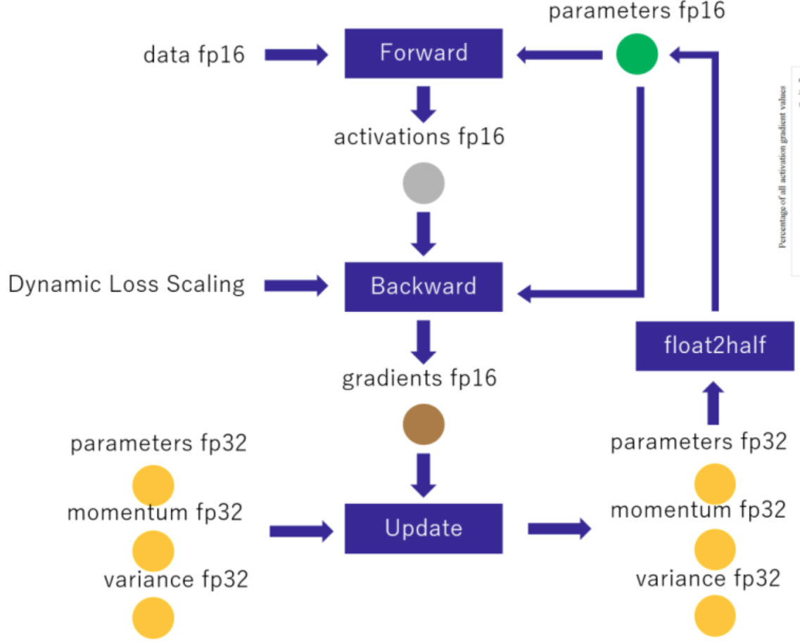
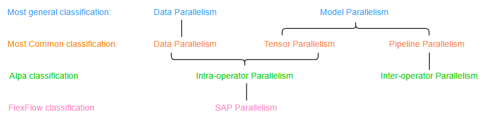
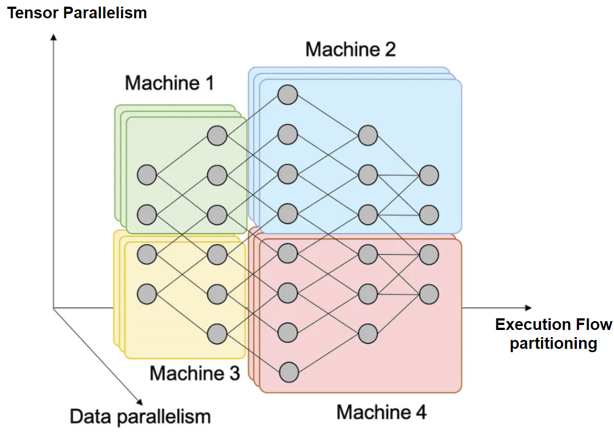
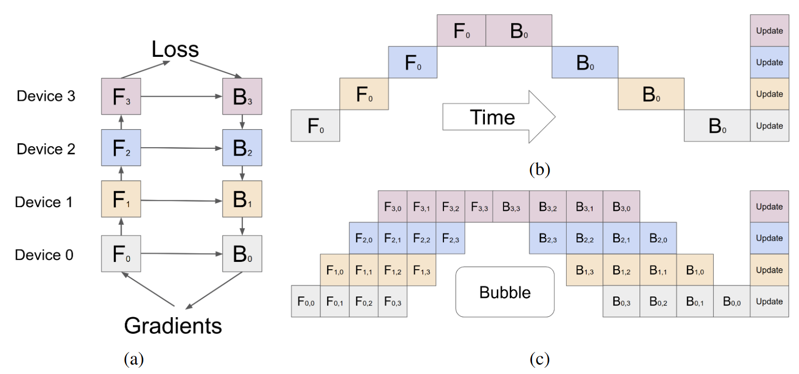
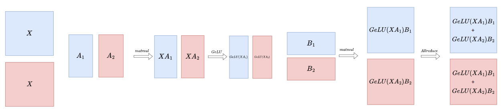
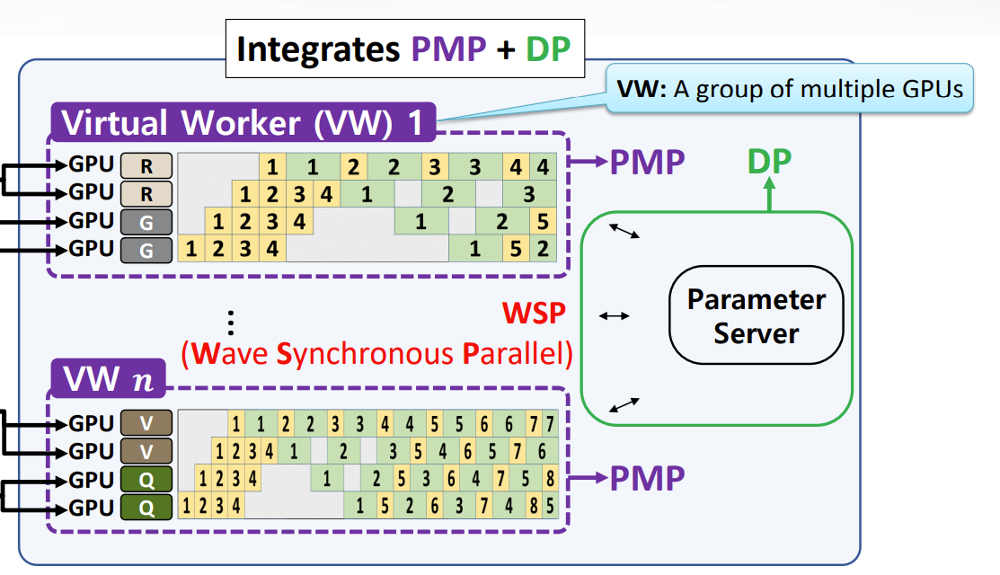
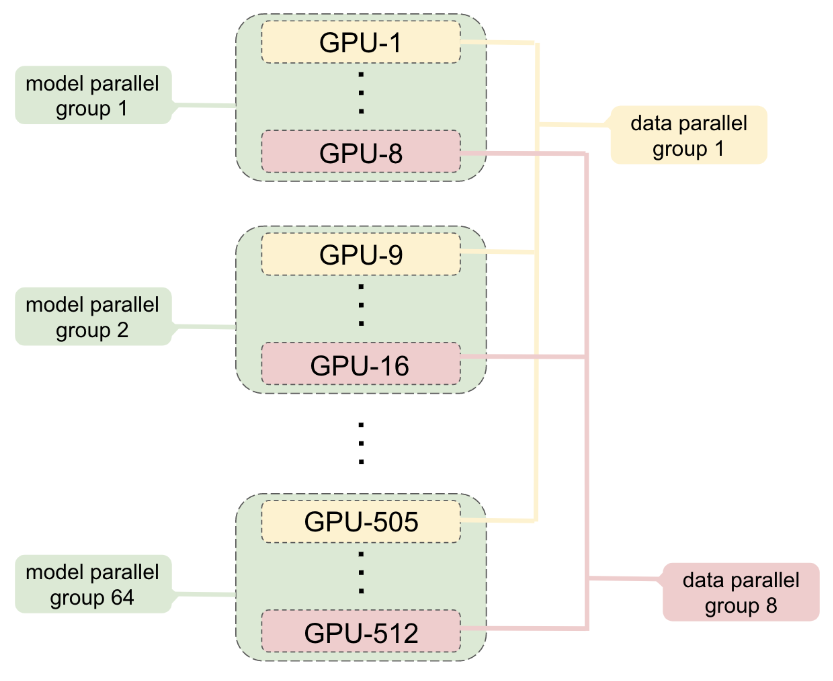

Basic Summary
1. Process of forward and backward¶
\(O = relu(XW_1) W_2\)
for example: $$ f_{loss} = (O - Y)^2, \frac{\partial l}{\partial O} = 2(O - Y) $$
Takeway
- Backward pass in a neural network take about twice as long as the forward pass. Beacuse almost every \(matmul\) in forward pass corresponds to two \(matmul\) in backward pass. One for get gradient of parameter. One for get gradient of input.
Related Reading
(Stack Exchange)Why should one expect the backward pass to take twice as long as the forward pass?
- Not all intermediate results of the forward pass will be used in the backward pass, so only the "activations" from the forward pass need to be stored
2. Memory consumption¶
Adam —— The most commonly used optimization algorithm in LLM:
Mix Precision Training: FP16 + FP32

Why Update Use FP32?
-
Magnitude is smaller than \(2^{-24}\) becomes zero in FP16, \(learning rate \times gradient\) will be zero.
-
The ratio of the weight value to the weight update is very large
Takeway
Memory consumption:
-
Model:
-
parameters(fp16) : 2 bytes
-
gradients(fp16) : 2 bytes
-
-
Optimizer status:
-
momentum(fp32) : 4 bytes
-
variance(fp32) : 4 bytes
-
parameters(fp32) : 4 bytes
-
-
Activations(fp16) : 2 bytes
- for GPT architecture, the size of activations is about \(12 \times hidden dim \times batch \times seq length \times transf ormer layers\)
-
Buffer & Fragmentation
GPT-2 1.5B example
sequence length of 1K and batch size of 32
-
Model: 4 bytes \(\times\) 1.5B \(\approx\) 6GB
-
Optimizer status: 12 bytes \(\times\) 1.5B \(\approx\) 18GB
-
Activations: 2 bytes \(\times\) 12 \(\times\) 1600 \(\times\) 32 \(\times\) 1024 \(\times\) 48 \(\approx\) 60.3GB, use Activation Checkpointing can reduce to 8GB
-
Total: 32GB
Activation Checkpointing (1)
Key idea: During the forward computation, only store activations for some layers, and then recompute the other required activations during the backward pass, trading storage for computation.

recompute：

backward pass：


Memory consumption：

-
Take \(K = \sqrt{N}\), get \(O(\sqrt{N})\) Space Complexity。
-
33% re-computation time overhead
- also known as "Activation Recomputation", "re-materialization"... First proposal in Training deep nets with sublinear memory cost(arxiv'16).
3. Parallelism¶
3.1 overview¶

Most general classifcation:
-
Data parallelism(Too much data): Different device, Different data from same batch, Same model parameter, execute simultaneously
-
Model parallelism(Too large model): Others
Most Common classifcation:

-
Pipeline Parallelism: Execution flow partitioning + batch partitioning + microbatch pipeline excution
-
Tensor Parallelism: Partitioning layer/operator into multiple sections, execute simultaneously
3.2 Pure Data Parallelism¶
DP
- Communication Volume(all-reduce): \(O(Parameter\_num \times 2 \times \frac{d - 1}{d})\) for each batch, each GPU, here \(d\) is the number of devices
Tip
for transformer-architechture model, \(O(Parameter \_num) = O(hidden\_dim^2 \times layer\_num)\)
- Can achieve Communication-Computation Overlap
3.3 Pure Pipeline Parallelism¶

Pipeline Schedule Strategy
Assume 1 batch partitioned to \(m\) mirco-batch, there are \(p\) devices

- bubble ratio(bubble/not-bubble): \(\frac{p-1}{m}\), where p is the number of devices, m is the number of micro-batch

-
Communication Volume: \(O(stage\_output)\) per GPU for each batch for point to point communication
-
Can achieve Communication-Computation Overlap
-
For less idle time caused by bubble, need to increase the number of micro-batch \(m\) or decrease the number of devices \(p\)
3.4 Pure Tensor Parallelism(Megatron-LM)¶
3.4.1 Basics of Transformer¶
Transformer-Architechture
GeLU
3.4.2 Attention Partition¶
-
Every GPU has same input \(X\)
-
Distribute computations of different heads to different GPUs
-
Splitting \(W^O\) by rows and placing them on different GPUs
Example
4 heads, 2 GPUs:
3.4.3 MLP Partition¶
-
Every GPU has same input \(X\)
-
Splitting \(W_1\) by column and placing them on different GPUs
-
Splitting \(W_2\) by row and placing them on different GPUs
Example
2 GPUs:

3.4.5 Put them together¶
number of Allreduce
\(f\) is an identity operator in the forward pass and all reduce in the backward pass while \(g\) is an all reduce in the forward pass and identity in the backward pass
-
Communication Volumn: \(8 \times batch\_size \times 𝑠eq\_len \times ℎidden\_size \times \frac{t - 1}{t}\) per layer per GPU for each batch, where \(t\) is the number of GPUs.
-
Communication and computation can't overlap
Example
-
32 DGX-2H servers (a total of 512 Tesla V100 SXM3 32GB GPUs)
-
300 GB/sec bandwidth between GPUs inside a server via NVSwitch
-
100 GB/sec of interconnect bandwidth between servers using 8 InfiniBand adapters per server.
We sustain 15.1 PetaFLOPs across the entire application with 76% scaling efficiency when compared to a strong single GPU baseline that sustains 39 TeraFLOPs, which is 30% of peak FLOPs.
3.5 hybrid parallelism¶
3.5.1 DP + PP¶

3.5.2 PP + DP¶

3.5.3 DP + TP¶

3.5.4 PP + TP¶
3.5.5 DP + PP + TP¶

3.6 Takeaway¶
-
Data parallelism: Different device, Different data from same batch, Same model parameter, execute simultaneously
-
Communication Volume(all-reduce): \(O(Parameter\_num \times 2 \times \frac{d - 1}{d})\) for each batch, each GPU, where \(d\) is the number of GPU
-
Can achieve Communication-Computation Overlap
-
-
Pipeline Parallelism: Execution flow partitioning + batch partitioning + microbatch pipeline excution
-
Communication Volume(point to point): \(O(stage\_output)\) per GPU for each batch for communication
-
Can achieve Communication-Computation Overlap
-
For less idle time caused by bubble, need to increase the number of micro-batch \(m\) or decrease the number of devices \(p\)
-
-
Tensor Parallelism: Partitioning same layer/operator into multiple Parts, execute simultaneously
-
Communication Volumn(all-reduce): \(8 \times batch\_size \times 𝑠eq\_len \times hidden\_size \times \frac{t - 1}{t}\) per layer per GPU for each batch, where \(t\) is the number of GPUs.
-
Communication and computation can't overlap
-
创建日期: 2023-09-16